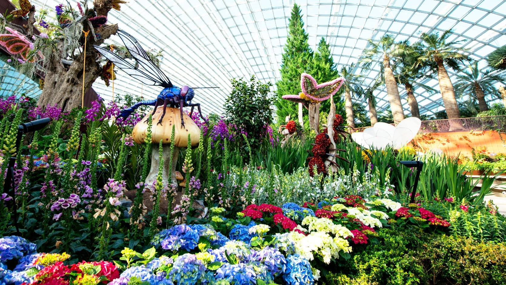

Gardens by the Bay is a nature park opened on 29 Jun 2019. It is located next to the Marina Reservoir and consists of 3 waterfront gardens, Bay South Garden(in Marina South), Bay East Garden (in Marina East) and Bay Central Garden (in Downtown Core and Kallang). Within the garden, there are also multiple attractions. To find out about the latest events, click here.

The Flower Dome is the largest greenhouse in the world as listed in the 2015 Guinness Book of World Records at 1.2 hectares (3.0 acres) and replicates a cool-dry mediterranean climate. It features a changing display, the flower field, and eight other gardens, namely The Baobabs, Succulent Garden, Australian Garden, South African Garden, South American Garden, Olive Grove, California Garden and the Mediterranean Garden. These eight gardens exhibit exotic flowers and plants from the Mediterranean and semi-arid regions from five different continents.
The Cloud Forest replicates the cool moist conditions found in tropical mountain regions between 1,000 metres (3,300 ft) and 3,000 metres (9,800 ft) above sea level, found in South-East Asia, Central- and South America. It features a 42-metre (138 ft) "Cloud Mountain", accessible by an elevator, and visitors will be able to descend the mountain via a circular path where a 35-metre (115 ft) waterfall provides visitors with refreshing cool air.
Supertrees are the 18 tree-like structures that dominate the Gardens' landscape with heights that range between 25 metres (82 ft) and 50 metres (160 ft). They are vertical gardens that perform a multitude of functions, which include planting, shading and working as environmental engines for the gardens.